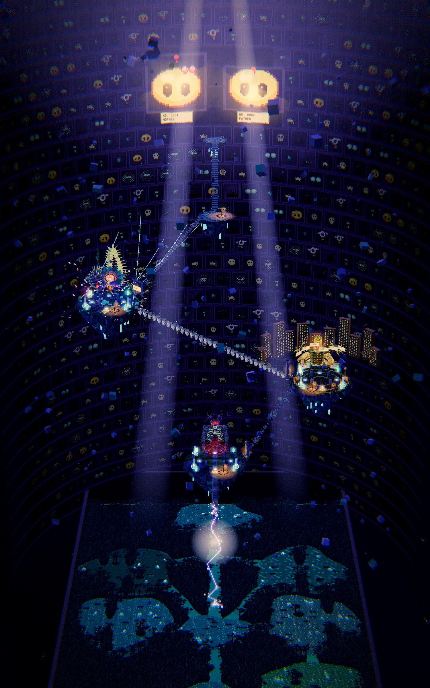
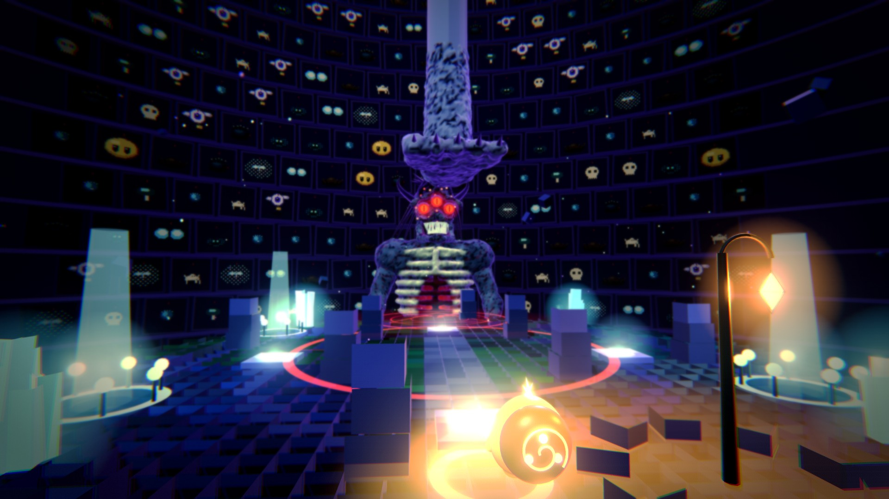
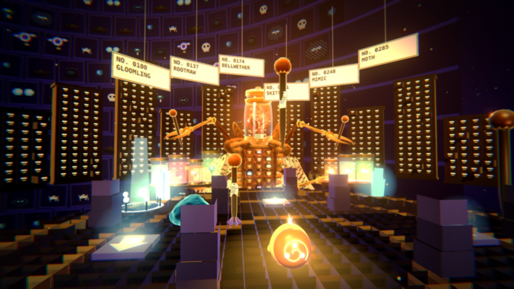
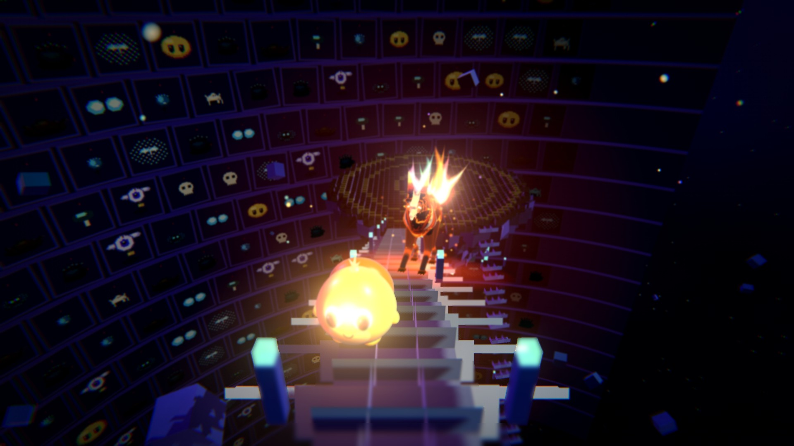
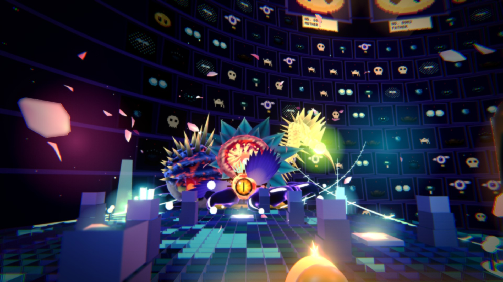
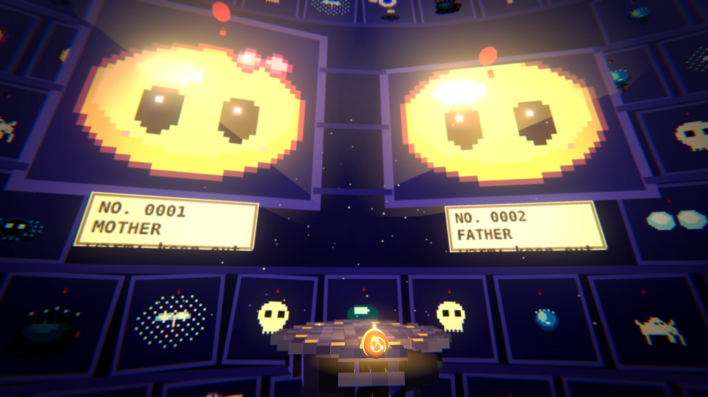
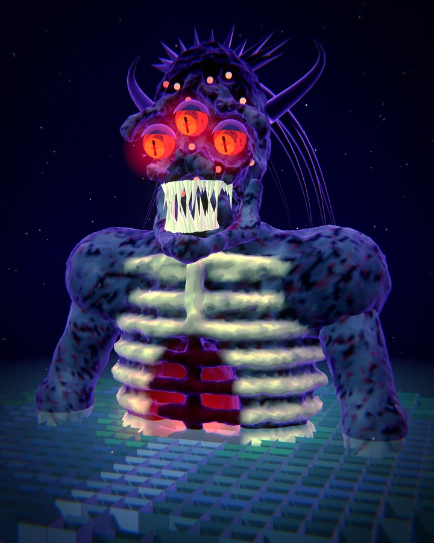
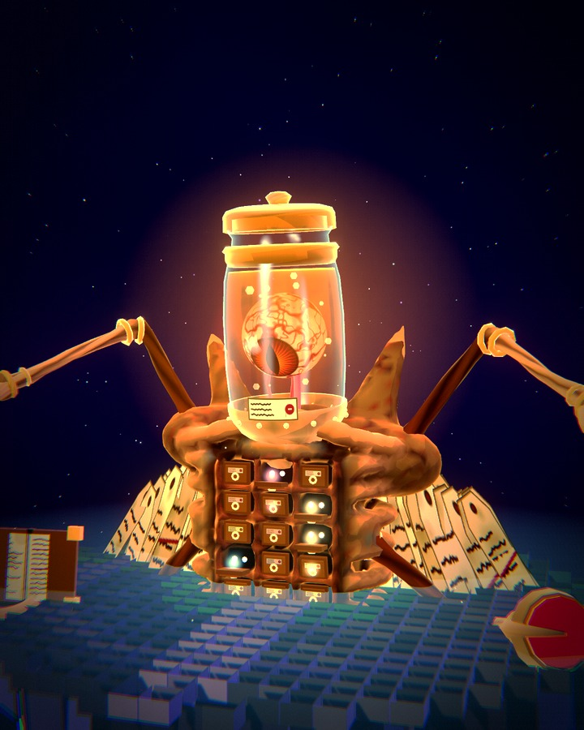
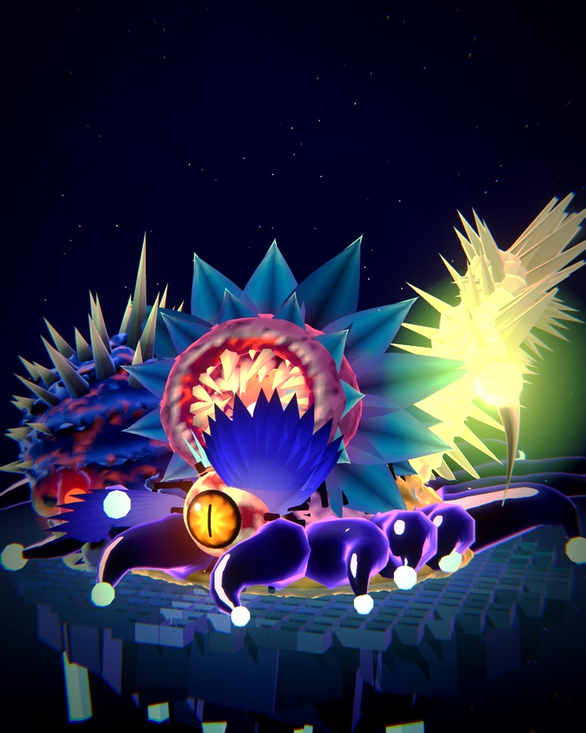
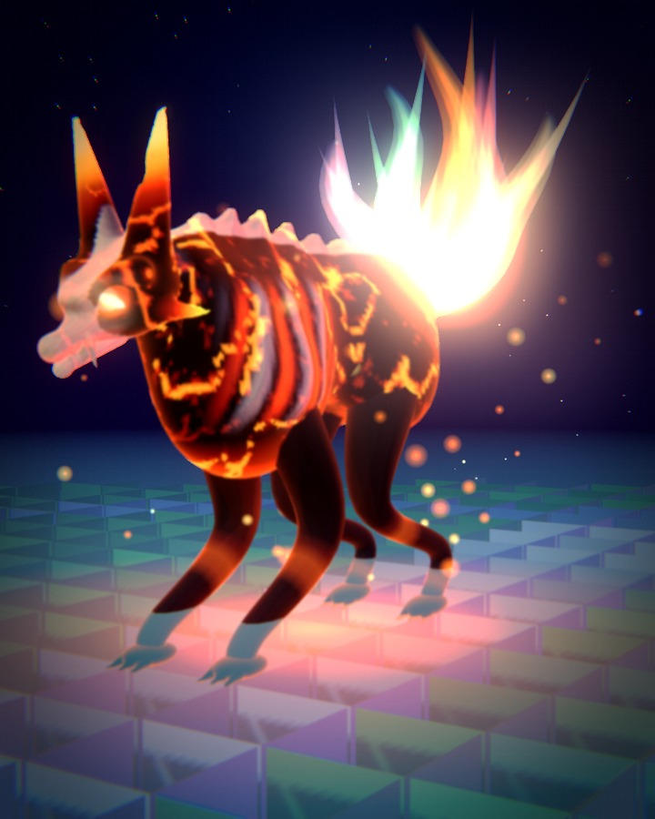

3D map · v1 · one explorable wall: climb it, beat three bosses, find the two yellow smudges

the route · five stops, one way up
1

arena layout as today
The Pressed Garden
X, the Hollow
You land on the entry bridge. A quiet lap first: wells, pads, crystals, a hearth. X waits on its stage.
"Far below, the forest hangs like a pressed flower."
2

arena layout as today
The Archive
The Collector
A stair climbs to the keeper's wing: cabinets of drawers, jars with something pressed inside, amber lamps, giant pins in the floor.
"Someone has been keeping all of this."
3

new: the walk between
The Long Span
the Cinderfox
A spine of bone across the drum. The hound shadows you; it cannot be killed, only driven off. No hearth until the far side.
orange is the fox. keep it behind you.
4

arena layout as today
The Remix
The Mash
Cyan threads run out to the wall, petals drift, the light turns pink and teal. The guardians, stitched back together.
"They are all here. Stitched together."
5

new: the goal
The Summit
Mother and Father
One last hearth, then the final stair to a ledge under two huge pinned blobs. The fox stops at the foot of it.
"Up on the wall, two yellow smudges. I know them."
what you find on the way
Wells
Cold flowers round a pool and a column of light. Heal a heart, gather light.
Surge pads
Step on a plate and you are thrown along the ring. Quick, and a little risky.
Light crystals
Strike one and it bursts into light for you: charge for a Nova.
Hearths new
Lantern light the Cinderfox will not enter. A checkpoint: rest, look at the map.
Pinned gates new
Pinned shut by the Collector, "NOT FOR REMOVAL". Each opens when the boss before it falls.
Pins
The Collector's, left standing in the floor of his wing. Cover, and a warning.
kept as they are · the game's own models, rendered here untouched

X, the Hollowit fell in from the third dimension

The Collectorhe wanted you on his wall

The Mashevery guardian, stitched back together

The Cinderfoxconcept hound, docs/CINDERFOX.md
how to read this
one wall, three steps. The inside of a huge drum is the Specimen Wall. The Garden sits at the bottom, one island per boss climbs it, and the parents hang near the top.
the arenas are the arenas. Every island has the game's arena layout (radius 18, the same pillars, wells, pads and crystals) and every boss stands where the game puts it.
what is new is the walking: stair-bridges, pinned gates, hearths, and the hound that keeps you moving. The 2D forest is untouched.
orange is the fox, red is X, gold is the Blob.
concept only: nothing in this sheet is in the game yet · drawn with the game's own models, painters and cube tiles (tools/world-render.mjs)